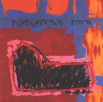

| Artist: | Big Big Train |
| Title: | Bard |
| Label: | Treefrog Records tfcd001 |
| Length(s): | 67 minutes |
| Year(s) of release: | 2002 |
| Month of review: | [05/2002] |
| 1) | The Last English King | 5.50 |
| 2) | Broken English | 14.09 |
| 3) | This Is Where We Came In | 5.22 |
| 4) | Harold Rex Interfectus Est | 1.02 |
| 5) | Blacksmithing | 3.03 |
| 6) | Malfosse | 0.53 |
| 7) | Love Is Her Thing | 3.50 |
| 8) | How The Earth From This Place Has Power Over Fire | 1.53 |
| 9) | A Short Visit To Earth | 6.18 |
| 10) | For Winter | 16.47 |
| 11) | A Long Finish | 8.20 |
Jo Michaels opens the vocals on the epic track Broken English. With over fourteen minutes, the one but longest track on the album. Again the music evolves slowly, this time the clear percussion somewhat jazzy (brushes). The vocal melody is quite strong and memorable, but certainly not catchy. Martin Read takes care of the male vocals on this track. His voice is a relaxed soothing one. I like the way the keyboards have taken on a larger role in the music of Big Big Train (at least that's how it seems to me). There's even room for a keyboard solo here and there contrasting with the warmer organ sound found right after. The passage that follows is a typically progressive one with a strong nod in the direction of Yes. The final part of the track features a rather long part on first acoustic guitar and later some rough and sharp lead guitar work. I was thinking a bit of Timothy Pure here. A bit of the same mood involved.
This Is Where We Came In has some references to the softer side of Spock's Beard. Again, the mood of the song is quite subdued, with some good vocal melodies. After the short acoustic Harold Rex Interfectus Est (but with mellotron) and its sad old movie soundtrack feel, we come to Blacksmithing. As often happens, the acoustically dominated intro's to the songs remind me a lot of Genesis. In this song especially, the combination of an ordinary song (with a vocal melody recurring from earlier on) with the Genesis mood, and somewhat dreamy backing vocals.
Malfosse is a short piece with tragic sounding choral keyboards and a bit of piano. An interlude leading up to the ballad Love Is Her Thing. Actually, the song is not very different from the previous songs, in that the music is somewhat dreamy and soothing, notwithstanding a few more forceful excursions on keyboard and organ. How The Earth From This Place Has Power Over Fire is another short atmospheric interlude, featuring only keyboards.
With three tracks to go, we still have something like half an hour of music waiting for us. A Short Visit To Earth is the first of these tracks, a subdued piece, but sadder than the others. The music comes quite close to No-Man here, with some really nice piano and an interlude at which to warm yourself in the middle. The vocal parts reminded me of Tears For Fears in their more introvert moments. Following, we have an instrumental jazzy interlude with guitar, bass and drums.
For Winter is the longest track, almost seventeen minutes long. It opens with a tragic theme on synth strings. On this song, we have five vocalists in all. The first foru minutes, the music is mainly acoustic, subdued and introvert. Then the piano sets in for a little playfulness. Afterwards, the not so interesting vocal part of the beginning returns. Almost halfway, the rhythm section starts to work, referring a bit to Genesis. Right about here the passage starts where organ and keyboards gain control. Time for an atmospheric guitar solo as well. All in all, not one of the stronger pieces, a bit too longwinded, although the rock does set in at two-thirds. A Long Finish does not add much to the above, besides a sharp guitar solo and a bit of groove with dissonant keyboards at the end.